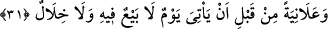

MÜMİNLERE SÖYLE!..
31. İman eden kullarıma söyle: Namazlarını dosdoğru kılsınlar, kendisinde ne
alışveriş, ne de dostluk bulunan bir gün gelmeden önce, kendilerine verdiğimiz
rızıklardan (Allah için) gizli-açık harcasınlar.
`
“İman eden kullarıma söyle.”
Hikmet ehlinden birisi der ki: Allah “kullarım” buyurarak kullarını şereflendirmiştir.
Bu onlar için dünyâdan ve dünyâda olan her şeyden daha hayırlıdır. Çünkü bu ifâdede
onları kendisine izâfe etmektedir. İzâfe etmek ise âzâd etmeye delâlet eder. Çünkü
efendi kölesine ‘evlâd’ veya ‘çocuk’ dese, bu köle âzâd olmuş olmaz. Ama ‘evlâdım’
veya ‘çocuğum’ dese, köleyi kendisine izâfe ettiği için âzâd olmuş olur. Allah Teâlâ da
kulları kendisine izâfe ettiği zaman bunda onları ateşten âzâd ettiğine delil vardır.
Kulluktan daha üstün bir şeref yoktur. Câmî der ki:
Efendilerin elbisesi ve pâdişahların hil‘ati neye yarar?
Kölelik örtüsü omuzu üzerinde olan kimse için.
Ârifler sultanı Bâyezid Bistamî (k.s.) şöyle derdi: “Halk hesaba çekilmekten kaçıyor,
bense hesaba çekilmek istiyorum. Çünkü, Allah Teâlâ hesaba çekerken bana: “Kulum’”
diyecek olsa bu bana şeref olarak yeter.”
“Namazlarını dosdoğru kılsınlar,” Namazlarını kılmaya devam etsinler. Yâni, ey
Muhammed (s.a.), benim îmân etmiş kullarıma söyle, emret ki: Aynı şekilde namazlarını
kılsınlar, kendilerine verilen mallardan infakta bulunsunlar.
“kendisinde ne alışveriş, ne de dostluk bulunan bir gün gelmeden önce” işlerini
eksik bırakanların bunları telâfî edemeyeceği, dostluk olmadığı için de hiçbir dostun
şefâatinin söz konusu olmayacağı kıyâmet günü gelmeden önce “kendilerine verdiğimiz
rızıklardan gizli-açık (Allah için) harcasınlar.”
Buradaki ‘dostluk’tan maksad insan tabîatının meyli ve nefsin rağbeti sebebiyle olan
dostluktur. Bu âyet, “O gün, müttakîler hâriç dostlar birbirine düşman kesilirler.”
(ez-Zuhruf, 43/67) âyetine ters düşmez. Çünkü muttakîler arasındaki dostluk, sırf Allah
içindir. Ya da bu, alış-verişin ve dostluğun fayda sağlamayacağı kıyâmet gününden önce
olacaktır. O günde ancak namaz kılmak, Allah rızası için hayır yapmak gibi (önceden
yapılan) tâatler fayda verecektir. Mal biriktirip hayır yapmayı terk etmek, genellikle
ticarî faâliyetler ve hediyeleşme için olur. Bunlar ise âhirette imkânsız olduğu için ölüm
zamanına kadar onları biriktirmenin mânâsı yoktur.